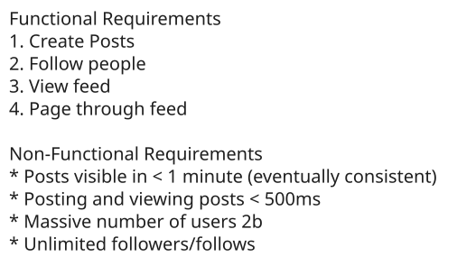
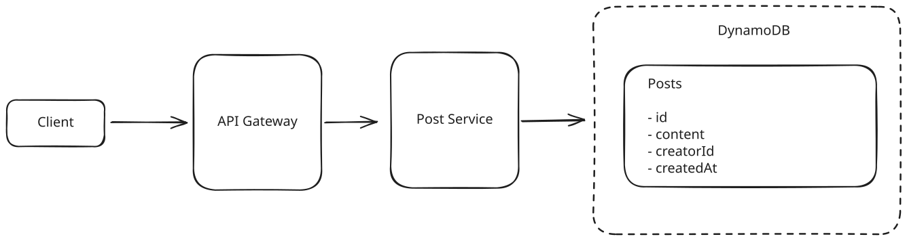
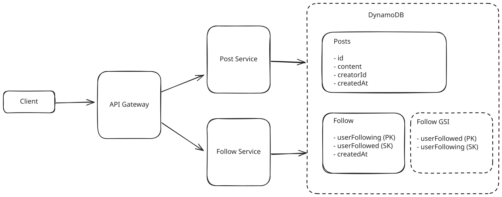
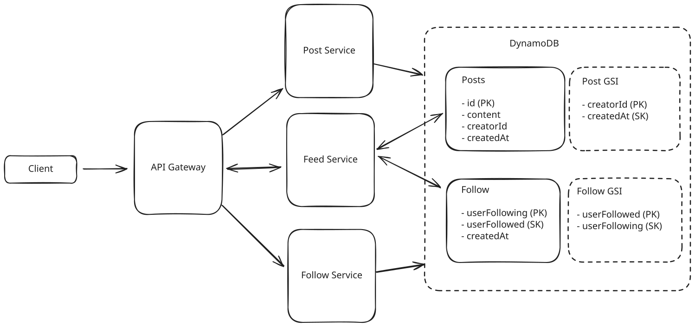
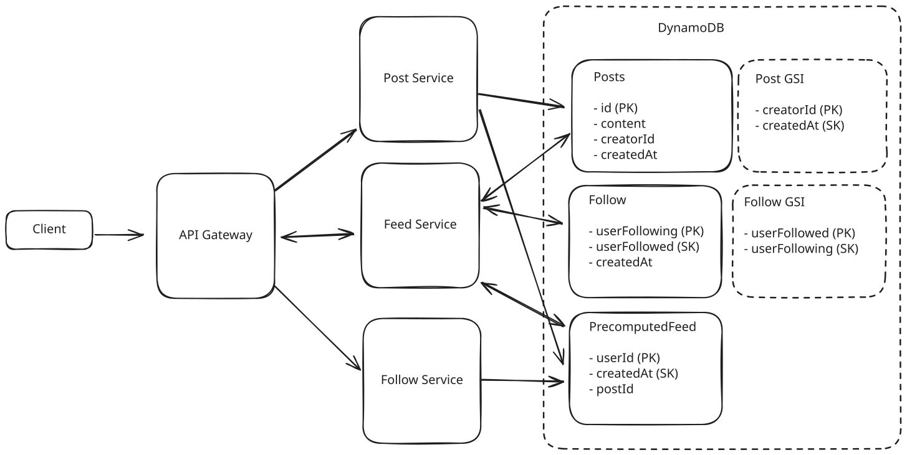
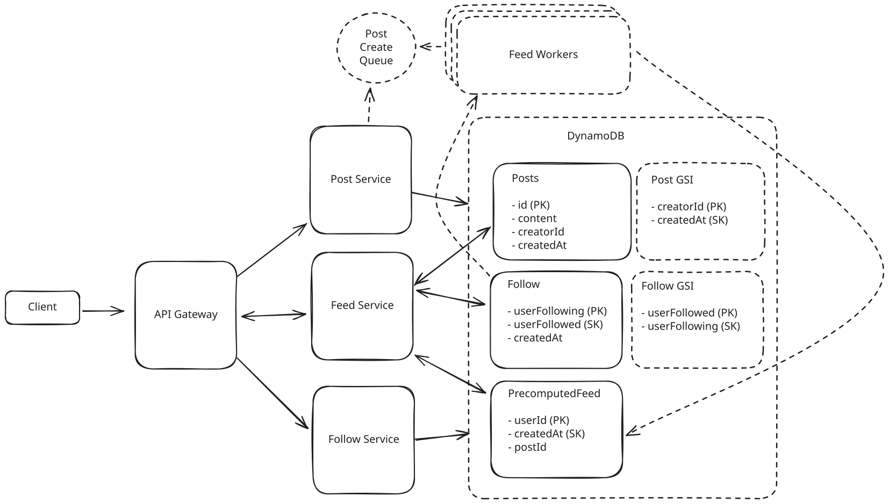
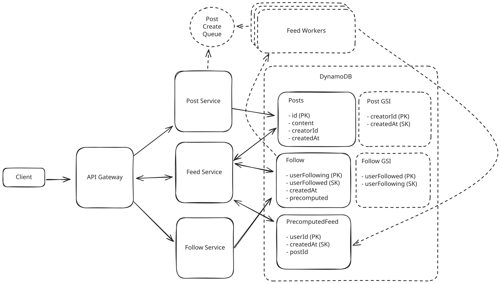
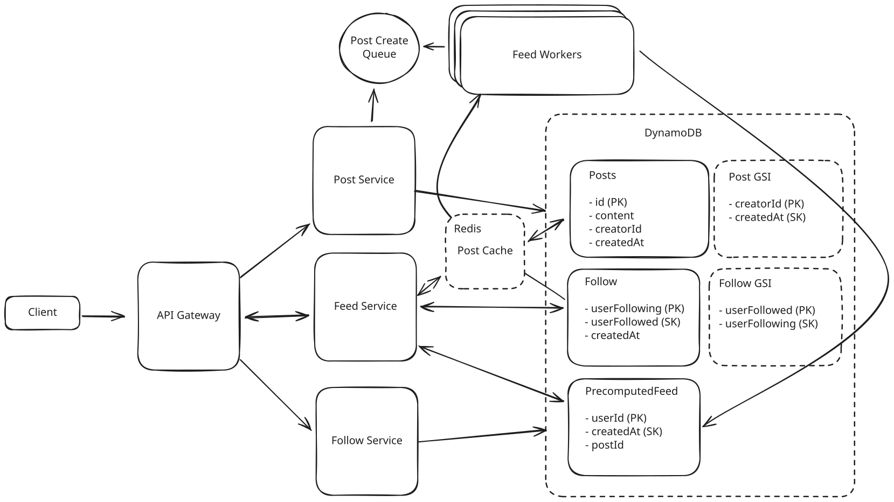
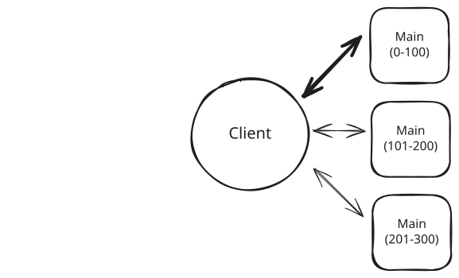
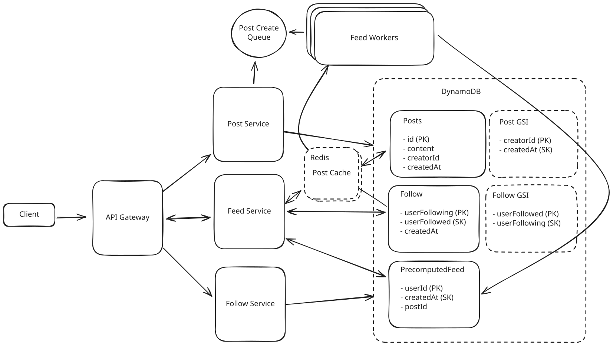

Common Problems
FB News Feed
Scaling Reads
Understanding the Problem
📰 What is Facebook's News Feed
Facebook is a social network which pioneered the News Feed, a product which shows recent stories from users in your social graph.
This is a classic system design problem dealing with fan-out and data management. For this problem, let's assume we're handling uni-directional "follow" relationships as opposed to the bi-directional "friend" relationships which were more important for the earliest versions of Facebook.
Let's start by defining our requirements.
Functional Requirements
Core Requirements
- Users should be able to create posts.
- Users should be able to friend/follow people.
- Users should be able to view a feed of posts from people they follow, in reverse chronological order (newest first).
- Users should be able to page through their feed.
Below the line (out of scope):
- Users should be able to like and comment on posts.
- Posts can be private or have restricted visibility.
For the sake of this problem (and most system design problems for what it's worth), we can assume that users are already authenticated and that we have their user ID stored in the session or JWT.

Non-Functional Requirements
Core Requirements
- The system should be highly available (prioritizing availability over consistency). We'll tolerate up to 1 minute of post staleness (eventual consistency).
- Posting and viewing the feed should be fast, returning in < 500ms.
- The system should be able to handle a massive number of users (2B).
- Users should be able to follow an unlimited number of users, users should be able to be followed by an unlimited number of users.
Having quantities on your non-functional requirements will help you make decisions during your design. A system which is single-digit millisecond fast requires a dramatically different architecture than a "fast" system which can take a second to respond.
Here's how it might look on your whiteboard:

Facebook News Feed Requirements
The Set Up
Planning the Approach
The hard part of this design is going to be dealing with the potential of users who are following a massive number of people, or people with lots of followers (a problem known as "fan out"). We'll want to move quickly to satisfy the base requirements so we can dive deep there. For this problem (like many!), following our functional requirements in order provides a natural structure to the interview, so we'll do that.
Defining the Core Entities
Starting with core entities gives us a set of terms to use through the rest of the interview. This also helps us to understand the data model we'll need to support the functional requirements later.
For the News Feed, the primary entities are easy. We'll make an explicit entity for the link between users:
- User: A user in our system.
- Follow: A uni-directional link between users in our system.
- Post: A post made by a user in our system. Posts can be made by any user, and are shown in the feed of users who follow the poster.
In the actual interview, this can be as simple as a short list like this. Just make sure you talk through the entities with your interviewer to ensure you are on the same page.
Core Entities
API or System Interface
The API is the primary interface that users will interact with. It's important to define the API early on, as it will guide your high-level design. We can build our API by defining the endpoints necessary for each of our functional requirements.
For our first requirement, we need to create posts:
POST /posts
{
"content": { }
}
// -> 200 OK
{
"postId": // ...
}We'll leave the content empty to account for rich content or other structured data we might want to include in the post. For authentication, we'll tell our interviewer that authentication tokens are included in the header of the request and avoid going into too much detail there unless requested.
Moving on, we need to be able to follow people. Let's use a simple RESTFUL PUT endpoint for this. The authenticated user (from their JWT) is the one doing the following, and [id] is the user they want to follow.
PUT /users/[id]/follow
{ }
// -> 200 OKHere the follow action is binary. By using PUT we can ensure it is idempotent so it doesn't fail if the user clicks follow twice. Unfollowing (out of scope) would be accomplished with a DELETE. We don't need a body but we'll include a stub just in case and keep moving.
Our last requirement is to be able to view our feed and page through it.
GET /feed?pageSize={size}&cursor={timestamp?}
{
items: Post[],
nextCursor: string
}This can be a simple GET request. We've included some parameters to allow the user to page through their feed. Since our requirements are to return posts in reverse chronological order, when users page through their feed they'll be looking at increasingly older posts. We'll use a timestamp as a "cursor" to represent the oldest post they've seen so far, so each page will return N posts older than that timestamp.
We'll avoid diving into the structure of Posts for the moment to give ourselves time for the juicier parts of the interview.
Especially for more senior candidates, it's important to focus your efforts on the "interesting" aspects of the interview. Spending too much time on obvious elements both deprives you of time for the more interesting parts of the interview but also signals to the interviewer that you may not be able to distinguish more complex pieces from trivial ones: a critical skill for senior engineers. "I'll come back if I have time for this" is a great strategy!
Ok, we now have some API's, let's work on building the high-level design behind them.
High-Level Design
1. Users should be able to create posts.
In our first requirement, we need to create posts and have them accessible by their ID. We're going to start very basic here and build up complexity as we go.
To start, and since we know this is going to scale, we'll put a horizontally scaled service behind an API gateway/load balancer. We can skip the caching aspect since we'll get to that later. By having the API gateway and load balancer, we can scale up our service with more traffic by adding additional hosts. Since each host is stateless as it's only writing to the database (and we're not dealing with reads yet), this is really easy to scale by just adding more hosts!
Users hit our API gateway with a new post request, this gets passed to one of the post service endpoints which creates an insert event that is sent to our database. Easy.

Simple Post Creation
For our database, we can use any key-value store. For this application, let's use DynamoDB for its simplicity and scalability. DynamoDB allows us to provision extremely high throughput provided we spread our load evenly across our partitions.
Great, we can create posts. Onward.
2. Users should be able to friend/follow people.
Functionally, following or friending a person is establishing a relationship between two users. This is a many-to-many relationship, and we can model it as a graph. Typically, for a graph you'll use a purpose-built graph database (like Neo4j) or a triple store. However, for our purposes, we can use a simple key-value store and model the graph ourselves.
Graph databases can be more useful when you need to do traversals or comprehensions of a graph. This usually requires stepping between different nodes, like capturing the friends of your friends or creating an embedding for a recommendation system. We only have simple requirements in this problem so we'll keep our system simple and save ourselves from scarier questions like "how do you scale Neo4j?" We don't need a full-fledged graph database for this problem.
To do this, we'll have a simple Follow table using the entire relation with userFollowing as the partition key and userFollowed as the sort key. We can also create a Global Secondary Index (GSI) with the reverse relationship (e.g. partition key of userFollowed and sort key of userFollowing) to allow us to look up all the followers of a given user.
This allows us to query for the important pieces:
- If we want to check if the user is following another user, we query with both the partition key and the sort key (e.g. userFollowing:userFollowed). This is a simple lookup!
- If we want to get all the users a given user is following, we query with the partition key (e.g. userFollowing). This is a range query.
- If we want to get all the users who are following a given user, we query the GSI with its partition key (e.g. userFollowed). This is a range query.
We can put this data in another DynamoDB table for simplicity. In practice, AWS recommends single-table design for DynamoDB, but using separate tables here keeps our discussion clearer and is totally fine for an interview.

Following Service
We're off to a good start. Let's keep going.
3. Users should be able to view a feed of posts from people they follow.
The challenge of viewing a feed of posts can be broken down into steps, which we can do with our present design with only a few changes:
- First, we get all of the users who a given user is following.
- Next, we get all of the posts from those users.
- Finally, we sort all those posts by time and return them to the user.
We'll start by adding a feed service to do this work. It's going to be read-heavy and have very different query patterns than the Post and Follow services, so separating it out makes sense.
Pattern: Scaling Reads
News feed generation is quintessentially read-intensive - users check their feeds constantly but post rarely. This makes scaling reads essential through pre-computing feeds for active users, caching recent posts from followed users, and smart pagination. The key is that users typically only read the first few items, so aggressive caching of recent content delivers massive performance gains.
Finding all the posts from a given user is tricky with the existing Posts table: while we have an index on our follow table to quickly look up all the users a user is following, we don't have an index on our post table to quickly look up all the posts from a set of users. We can solve this by adding a GSI to the Post table with the creatorID as the partition key and the post's creation timestamp createdAt as the sort key. This will allow us to quickly pull all the posts from a set of users in chronological order.

Naive Feed Service
That seems to work. For a given user, we first request all of the users they follow from the Follow table. Then we request all the posts from those N users from the Post table via its GSI. Then we sort all of those posts by timestamp and return the results to the user!
Now alarm bells may be ringing for you and that's good. Several flags emerge here and your interviewer is going to expect you to see them quickly, so it's good to note them verbally:
- Our user may be following lots of users.
- Each of those users may have lots of posts.
- The total set of posts may be very large because of (1) or (2).
We'll need to solve those before we wrap things up! But before we dive into these complexities let's polish off our functional requirements.
In a real interview, I'd explain this to the interviewer exactly like that "I know this is not going to scale but I'm going to start with a naive solution and then solve the scaling problems separately".
A very common failure mode for candidates we work with is that they get lost in the weeds of a particular scaling problem before having a (mostly) complete design. By covering the breadth of our requirements before we go into depth we can avoid this situation - as long as we keep moving quickly!
4. Users should be able to page through their feed.
We want to be able support an "infinite scroll" -like experience for our users. To do this, we need to know what they've already seen in their feed and be able to quickly pull the next set of posts. Fortunately, "what they've already seen in their feed" can be described fairly concisely: a timestamp of the oldest post they've looked at. Since users are viewing posts from youngest to oldest, that one timestamp tells us where they've stopped and provides a great cursor for the next set of posts.
Since we already have a GSI on the post table which sorts posts by creation timestamp, we can use that directly to return only posts older than the cursor. This looks just like the previous functional requirement with one addition:
- First, we get all of the users who a given user is following.
- Next, we get all of the posts from those users that are older than the input timestamp.
- Finally, we sort all those posts by time and return them to the user.
Great! We have a working system that allows a small number of users to follow a small number of users with a small number of posts and view their feeds!
Now let's circle back so some of the issues we flagged earlier in our deep dives.
Potential Deep Dives
1) How do we handle users who are following a large number of users?
First, if a user is following a large number of users, the queries to the Follow table will take a while to return. Once we get each of the people they're following, we'll be making a large number of queries to the Post table to build their feed. This is called fan-out on read — a single read request fans out to create many more requests. Especially when latency is a concern, fan-out on read can be a real problem, so it makes for a good discussion point in system design interviews.
It's not uncommon to generate 10s to 100s of requests to satisfy an incoming request, but it is rarer to have to generate 1000's of requests, especially for a service that needs to serve users with low latency.
So what can we do instead? Your instinct here should be to think about ways that we can compute the feed results on write or post creation rather than at the time we want to read their feed. This is called fan-out on write — instead of assembling the feed when a user asks for it, we precompute feeds when posts are created. And in fact this is a good line of thinking!
While this particular question begs the question of how to handle a large number of follows, a sensible question for your interviewer might be "can we adjust the product in these instances?" Facebook, for example, sets the max number of friends as 5,000. Setting a max number of follows, or having a slightly different experience for these users is a very common approach for production systems like this. Is your user with 100k follows really going to notice if their posts are appearing a couple minutes late?
For users following a large number of users we can keep a PrecomputedFeed table. Instead of querying the Follow and Post tables, we'll be able to pull from this precomputed table. Then, when a new post is created, we'll simply add to the relevant feeds.
Each entry in the PrecomputedFeed table is keyed by userId and its value is a list of post IDs in reverse chronological order, limited to a small number of posts (say 200 or so). We want each entry to be compact so we can minimize the amount of space we require. Since we only ever access this table by user ID, we don't need to deal with any secondary indexes.
People frequently wonder "what about if users page back 100 pages into {their feed, search results, etc}?" While this is a fair question, most systems will simply just not support this (try to go a few dozen pages deep into Google) because real users aren't doing this.
At the end of the day, this fixed 200 number here could be increased or decreased by how much it impacts those tail users and the relative tradeoff in cost. We can always fall back to our naive solution of querying the base Follow and Post tables if we need to get more content for users who have reached the end of their feed.

Adding a Feed Table
Let's quickly gut-check the storage required of this solution before we move on. Let's assume each postID is 10 bytes, to store 200 posts per user we'd need 2KB per user. If we have 2B users, we need 4TB of storage for all these feeds. This is quite reasonable for a modern system.
One useful rule-of-thumb is to ask how much a given user, tenant, or item is going to cost in dollars. 2kb of data is a fraction of a cent per month and Facebook earns something like $100 per year for US-based users. So this is pretty reasonable.
While this dramatically improved read performance, it creates a new problem: when a user with a lot of followers creates a post, we need to write to millions of feeds efficiently. So let's dive into that next.
2) How do we handle users with a large number of followers?
When a user has a large number of followers we have a similar fanout problem when we create a post: we need to write to millions of Feed records!
Because we chose to allow some inconsistency in our non-functional requirements, we have a short window of time (< 1 minute) to perform these writes.
Approach
The naive approach is simply to blast out all the requests at once from our Post Service when the post is created. This will fail.
In the worst case, we're trying to write to millions of feeds with the new Post entry.
Challenges
This approach is basically unworkable both due to limitations in the number of connections that can be made from our single Post Service host as well as the latency available. In the best case that it does function, the load on our Post Service becomes incredibly uneven: one Post Service host might be writing to millions of feeds while another is basically idle. This makes the system difficult to scale.
Approach
A better option would be to make use of async workers behind a queue. Since our system tolerates some delay between when the post is written and when the post needs to be available in feeds, we can queue up write requests and have a fleet of workers consume these requests and update feeds.
Any queue will work here so long as it support at-least-once delivery of messages and is highly scalable. Amazon's Simple Queue Service (SQS) will work great here.
When a new post is created we create an entry in the SQS queue with the post ID and the creator user ID. Each worker will look up all the followers for that creator and prepend the post to the front of their feed entry.

Async Workers for Post Creates
Challenges
The throughput of the feed workers will need to be enormous. For small accounts with limited followers, this isn't much of a problem: we'll only be writing to a few hundred feeds. For mega accounts with millions of followers, the feed workers have a lot of work to do. We consider this in our Great solution.
Also, we need to be aware of the variable amount of work for each entry in the queue. One item which is to push posts for a user with 1M followers is dramatically more work than the one which is only to push to 1k followers. We may need to break up these tasks.
Approach
A great option would extend on Async Workers outlined above. We'll create async feed workers that are working off a shared queue to write to our precomputed feeds.

Async Workers for Post Creates
But we can be more clever here: we can choose which accounts we'd like to pre-calculate into feeds and which we do not.
For Justin Bieber (and other high-follow accounts), instead of writing to 90+ million followers we can instead add a flag onto the Follow table which indicates that this particular follow isn't precomputed. In the async worker queue, we'll ignore requests for these users.
On the read side, when users request their feed via the Feed Service, we can grab their (partially) precomputed feed from the Feed Table and merge it with recent posts from those accounts which aren't precomputed.
This hybrid approach allows us to choose whether we fan out on read or fan out on write on a per-account basis, and for most users we'll do a little of both. This is a great system design principle! In most situations we don't need a one-size-fits-all solution, we can instead come up with clever ways to solve for different types of problems and combine them together.
Challenges
Doing the merging of feeds at read time vs at write time means more computation needs to be done in the Feed Service. We can tune the threshold over which an account is ignored in precomputation.
3) How can we handle uneven reads of Posts?
To this point, our feed service has been reading directly from the Post table whenever a user requests to get their feed. For the vast majority of posts, they will be read for a few days and never read again. For some posts (especially those from accounts with lots of followers), the number of reads the post experiences in the first few hours will be massive.
DynamoDB, like many key-value stores, can scale to very high throughput provided certain conditions are met. One of the more important conditions is there being even load across the keyspace. Under the covers DynamoDB has physical machines with real limitations like any other database. If Post1 gets 500 requests per second and Post2 through Post 1000 get 0 requests per second, this is not even load!
Fortunately for us, Posts are far more likely to be created than they are to be edited. But how do we solve the issue of hot keys in our Post Table?
Approach
A good solution for this problem is to insert a distributed cache between the readers of the Post table and the table itself. Since posts are very rarely edited, we can keep a long time to live (TTL) on the posts and have our cache evict posts that are least recently used (LRU). As long as our cache is big enough to house most recent posts, the vast majority of requests to the Post Table will instead hit our cache. If we have N hosts with M memory, our cache can fit as many posts as fit in N*M.
When posts are edited (not created!) we simply invalidate the cache for that post ID.

Distributed Post Cache
We can use Redis for this and key off the post ID so we can evenly distribute posts across our cluster.
Challenges
The biggest challenge with the Post Cache is it has the same hot key problem that the Post Table did! For the unlucky shard/partition that has multiple viral posts, the hosts that support it will be getting an unequal distribution of load (again) which makes this cache very hard to scale. Many of the hosts will be underutilized.

Hot key issue
Approach
Like the Distributed Post Cache above, a great solution for this problem is to insert a cache between the readers of the Post table and the table itself. Since posts are very rarely edited, we can keep a long time to live (TTL) on the posts and have our cache evict posts that are least recently used (LRU). As long as our cache is big enough to house our most popular posts, the vast majority of requests to the Post Table will instead hit our cache.
The key difference from the previous approach: instead of a sharded cache (where each post lives on exactly one node), we use replicated cache instances where every instance can serve any post. A load balancer distributes requests across these instances, so each one independently handles a fraction of the total traffic. These cache instances don't need to coordinate. Each instance can service the same postID, which means a viral post's read traffic gets spread across all N instances instead of hammering a single shard.
This does mean we may have more cache misses initially (for a very viral post, with N cache instances, we might have N requests to the database instead of 1 if we had sharded the cache by postID). But N requests is much, much smaller than the millions of requests we'd need to handle if we didn't have a cache in the first place.
Both solve the problem, but this solution means we have N times the throughput for a hot key without any additional coordination required.

Redundant Post Cache
Challenges
In this case, we will have a smaller number of posts across our cache than if we chose to distribute or partition the posts. This is probably ok since our DynamoDB backing store can handle some variability in read throughput and is still fast.
What is Expected at Each Level?
Ok, that was a lot. You may be thinking, “how much of that is actually required from me in an interview?” Let’s break it down.
Mid-level
Breadth vs. Depth: A mid-level candidate will be mostly focused on breadth (80% vs 20%). You should be able to craft a high-level design that meets the functional requirements you've defined, but many of the components will be abstractions with which you only have surface-level familiarity.
Probing the Basics: Your interviewer will spend some time probing the basics to confirm that you know what each component in your system does. For example, if you add an API Gateway, expect that they may ask you what it does and how it works (at a high level). In short, the interviewer is not taking anything for granted with respect to your knowledge.
Mixture of Driving and Taking the Backseat: You should drive the early stages of the interview in particular, but the interviewer doesn’t expect that you are able to proactively recognize problems in your design with high precision. Because of this, it’s reasonable that they will take over and drive the later stages of the interview while probing your design.
The Bar for News Feed: For this question, an E4 candidate will have clearly defined the API endpoints and data model, and landed on a high-level design that is functional and meets the requirements. While they may have some of the "Good" solutions, they would not be expected to cover all the possible scaling edge cases in the Deep Dives.
Senior
Depth of Expertise: As a senior candidate, expectations shift towards more in-depth knowledge — about 60% breadth and 40% depth. This means you should be able to go into technical details in areas where you have hands-on experience. It's crucial that you demonstrate a deep understanding of key concepts and technologies relevant to the task at hand.
Advanced System Design: You should be familiar with advanced system design principles. For example, knowing approaches for handling fan-out is essential. You'll also be expected to iteratively diagnose performance bottlenecks and suggest improvements. Your ability to navigate these advanced topics with confidence and clarity is key.
Articulating Architectural Decisions: You should be able to clearly articulate the pros and cons of different architectural choices, especially how they impact scalability, performance, and maintainability. You justify your decisions and explain the trade-offs involved in your design choices.
Problem-Solving and Proactivity: You should demonstrate strong problem-solving skills and a proactive approach. This includes anticipating potential challenges in your designs and suggesting improvements. You need to be adept at identifying and addressing bottlenecks, optimizing performance, and ensuring system reliability.
The Bar for News Feed: For this question, E5 candidates are expected to speed through the initial high level design so you can spend time discussing, in detail, at least 2 of the deep dives. They should also be able to discuss the pros and cons of different architectural choices, especially how they impact scalability, performance, and maintainability. They would be expected to proactively surface some of the potential issues around fanout and performance bottlenecks.
Staff+
Emphasis on Depth: As a staff+ candidate, the expectation is a deep dive into the nuances of system design — I'm looking for about 40% breadth and 60% depth in your understanding. This level is all about demonstrating that, while you may not have solved this particular problem before, you have solved enough problems in the real world to be able to confidently design a solution backed by your experience.
You should know which technologies to use, not just in theory but in practice, and be able to draw from your past experiences to explain how they’d be applied to solve specific problems effectively. The interviewer knows you know the small stuff (REST API, data normalization, etc) so you can breeze through that at a high level so you have time to get into what is interesting.
High Degree of Proactivity: At this level, an exceptional degree of proactivity is expected. You should be able to identify and solve issues independently, demonstrating a strong ability to recognize and address the core challenges in system design. This involves not just responding to problems as they arise but anticipating them and implementing preemptive solutions. Your interviewer should intervene only to focus, not to steer.
Practical Application of Technology: You should be well-versed in the practical application of various technologies. Your experience should guide the conversation, showing a clear understanding of how different tools and systems can be configured in real-world scenarios to meet specific requirements.
Complex Problem-Solving and Decision-Making: Your problem-solving skills should be top-notch. This means not only being able to tackle complex technical challenges but also making informed decisions that consider various factors such as scalability, performance, reliability, and maintenance.
Advanced System Design and Scalability: Your approach to system design should be advanced, focusing on scalability and reliability, especially under high load conditions. This includes a thorough understanding of distributed systems, load balancing, caching strategies, and other advanced concepts necessary for building robust, scalable systems.
The Bar for News Feed: For a staff+ candidate, expectations are high regarding depth and quality of solutions, particularly for the complex scenarios discussed earlier. A staff candidate will likely cover all of the deep dives (and/or some that we haven't enumerated). They would be expected to surface potential issues in the system and talk about performance tuning for this problem.
Changelog
- 2024/07/22: Initial version
- 2025/06/03: Made updates to address common questions in comments
- 2026/02/17: Fixed reverse chronological order terminology, corrected storage calculation, removed erroneous "Redis again" reference, clarified follow API endpoint, added fan-out on read/write terminology, improved cache strategy descriptions, noted DynamoDB single-table design best practice, and various grammar fixes.
Test Your Knowledge
Answer the question below to find your gaps.
Question 1 of 15
What is the most effective approach to handle hot keys in a distributed cache system?
1
Switch to a different caching technology
2
Increase the memory size of all cache nodes
3
Use consistent hashing to redistribute the keys
4
Implement redundant caching where multiple nodes can serve the same popular keys